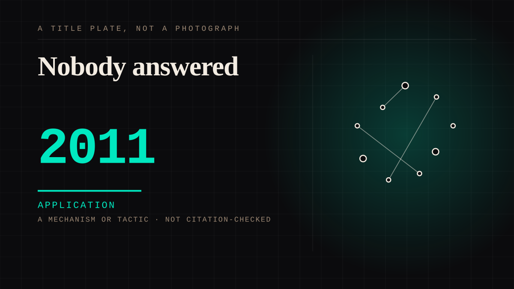

A mechanism or tactic · 2011 · Fandom
Nobody answered
The schedule goes from weekly to continuous and the bond loses its shape. A serial gives you a slot and a cliffhanger; an always-on feed has no slot and no gap to miss anybody in.

The rhythm was doing work nobody had measured. What replaced it is a permanent low-grade availability, which is a different emotional object: not a person who is more present, but one who is never finished, so there is no gap and therefore nothing to miss anybody in. The half of this the evidence supports is the gap - parasocial scales built in this period ask directly whether you miss characters when a show is between seasons, which is the thing an always-on feed removes. The other half it does not: where this entry's argument used to be that the bond loses its shape, the one controlled test of that mechanism found the bond getting stronger. Removing the slot does not obviously weaken the tie. It removes the absence, and the site has no evidence about what that costs.
Application. One-sided attachment put to work on purpose. Creator economies, community, fandom as infrastructure, and the things that genuinely help people. Not automatically good - a tool with an obvious use is a tool that will also get a bad one.
Consideration. The part where somebody stops and thinks. The research, the diagnosis, the ethics, the lawsuits, the regulators. Roughly fifty years of arguing with itself about whether this is a relationship.
Where it sits
2010 2010+ · 2011 2026
Provenance · 2 source record(s)
- unverifiedBinge watching was experimentally manipulated, not merely correlated, and the reported result runs the OPPOSITE way to this entry's argument: it increased the strength of parasocial relationships and the intensity of narrative transportation. So the claim that the bond 'loses its shape' when the weekly rhythm is removed is this site's position, and the one controlled test of it found the bond getting stronger. Recorded rather than smoothed over. Publisher returns 403 to an unauthenticated request; authors, volume, issue and article number confirmed against Crossref.Erickson, S., Dal Cin, S., & Byl, H. (2019). An Experimental Examination of Binge Watching and Narrative Engagement. Social Sciences, 8(1), 19. ↗
- unverifiedDocuments the gap at the centre of this entry as a measured thing rather than an impression: the parasocial scale items used include 'I miss my favorite characters when the show is on break between seasons', and the paper notes these bonds form in proportion to time spent with the characters. That is the missing-slot effect the summary describes - the thing a continuous feed removes is not the intensity but the absence. Publisher returns 403 to an unauthenticated request; bibliographic record confirmed against Crossref.Anghelcev, G., Sar, S., Martin, J. D., & Moultrie, J. L. (2020). Binge-Watching Serial Video Content: Exploring the Subjective Phenomenology of the Binge-Watching Experience. Mass Communication and Society, 24(1), 130-154. ↗
Not yet stood behind. The entry is real. A person has not read the citation and confirmed it, so treat the date as approximate until they do.
Connected · 2 out, 0 in
Reported as a story
It sits in
The full timeline → · The database → · See it in the atlas →